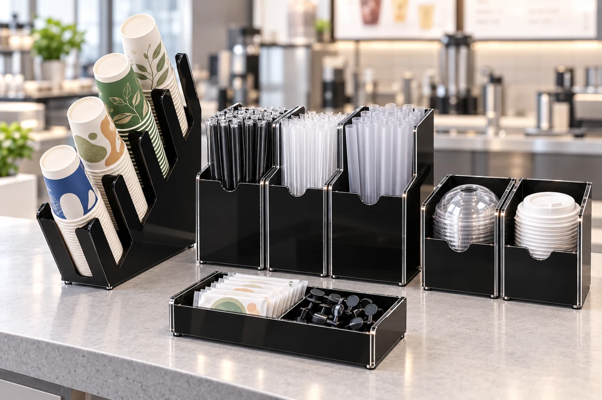

从安装引导到吧台收纳，这里收录了我的产品案例与正在整理的设计方案。
在八步安装工作台中查看进度、逐项操作，或诊断并修复连接故障。

围绕杯子、杯盖与吸管的取用，把吧台收纳拆成可组合的独立模块。
梳理新品从准备到门店执行的关键交接，呈现任务与确认节点。
以任务为入口，探索如何组织常用 AI 工具、上下文与产出。
探索从陈列照片到人工复核的路径，明确识别建议与人工判断的边界。
从商品素材与画面要求出发，规划场景图的生成、比较与选图流程。
把商品卖点整理为分镜，探索从镜头描述到视频审阅的创作流程。